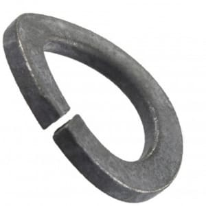

DIN 128 A Шайба пружинная изогнутая
Стандарт
DIN 128
Цена от
0,56 ₽
Размерный ряд
Размеры пружинных шайб DIN 128 A соответствуют диаметрам крепежных элементов. При выборе необходимо учитывать:
Шайбы металлические, кольца » DIN 128 A Шайбы изогнутые пружинные стопорные для повышенной нагрузки
Варианты и размеры (18)
| Наименование | Размер | Длина, мм | Материал | Покрытие | Цена |
|---|---|---|---|---|---|
| DIN 128 A Шайба пружинная изогнутая M10 L=2мм | M10 | 2 | 0,65 ₽ | ||
| DIN 128 A Шайба пружинная изогнутая M12 L=2мм | M12 | 2 | 0,73 ₽ | ||
| DIN 128 A Шайба пружинная изогнутая M14 L=2мм | M14 | 2 | 0,81 ₽ | ||
| DIN 128 A Шайба пружинная изогнутая M16 L=2мм | M16 | 2 | 0,89 ₽ | ||
| DIN 128 A Шайба пружинная изогнутая M18 L=2мм | M18 | 2 | 0,97 ₽ | ||
| DIN 128 A Шайба пружинная изогнутая M2.2 L=4мм | M2.2 | 4 | 0,34 ₽ | ||
| DIN 128 A Шайба пружинная изогнутая M2.5 L=5мм | M2.5 | 5 | 0,36 ₽ | ||
| DIN 128 A Шайба пружинная изогнутая M20 L=2мм | M20 | 2 | 1,10 ₽ | ||
| DIN 128 A Шайба пружинная изогнутая M22 L=5мм | M22 | 5 | 1,20 ₽ | ||
| DIN 128 A Шайба пружинная изогнутая M24 L=5мм | M24 | 5 | 1,30 ₽ | ||
| DIN 128 A Шайба пружинная изогнутая M27 L=5мм | M27 | 5 | 1,40 ₽ | ||
| DIN 128 A Шайба пружинная изогнутая M3 L=6мм | M3 | 6 | 0,39 ₽ | ||
| DIN 128 A Шайба пружинная изогнутая M30 L=5мм | M30 | 5 | 1,50 ₽ | ||
| DIN 128 A Шайба пружинная изогнутая M36 L=5мм | M36 | 5 | 1,80 ₽ | ||
| DIN 128 A Шайба пружинная изогнутая M4 L=7мм | M4 | 7 | 0,44 ₽ | ||
| DIN 128 A Шайба пружинная изогнутая M5 L=9мм | M5 | 9 | 0,50 ₽ | ||
| DIN 128 A Шайба пружинная изогнутая M6 L=11мм | M6 | 11 | 0,56 ₽ | ||
| DIN 128 A Шайба пружинная изогнутая M8 L=14мм | M8 | 14 | 0,69 ₽ |